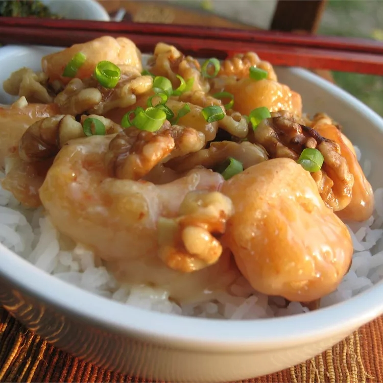

Honey Walnut Shrimp

Description
This honey walnut shrimp is a Hong Kong-style recipe!
Crispy battered shrimp are tossed in a creamy sauce
and topped with sugar-coated walnuts.
Ingredients
- 1 cup water
- ⅔ cup white sugar
- ½ cup walnuts
- 4 large egg whites
- ⅔ cup mochiko (glutinous rice flour)
- 1 cup vegetable oil for frying
- 1 pound large shrimp, peeled and deveined
- ¼ cup mayonnaise
- 2 tablespoons honey
- 1 tablespoon canned sweetened condensed milk
Steps
- Stir together water and sugar in a small saucepan over high heat.
Bring to a boil and add walnuts. Boil for 2 minutes,
then drain and place walnuts on a cookie sheet to dry.
- Whip egg whites in a medium bowl until foamy.
Stir in mochiko until it has a pasty consistency.
- Heat oil in a heavy deep skillet over medium-high heat.
- Dip shrimp in mochiko batter, then fry in batches in hot oil
until golden brown, about 5 minutes.
Remove with a slotted spoon and drain on paper towels.
- Stir together mayonnaise, honey, and sweetened condensed milk in a medium serving bowl.
Add fried shrimp and toss to coat with sauce.
Sprinkle candied walnuts on top and serve.